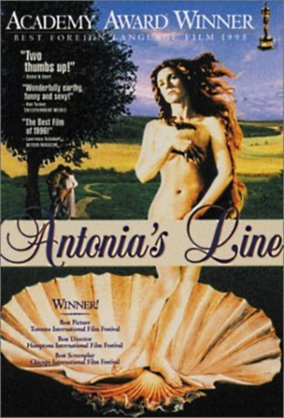

#2302 Antonias Welt
Alternativ: Antonia's Line (Englischer Titel)
Auszeichnungen: 1 Oscars gewonnen
 
 IMDB-Wertung: 7.5 / 10
IMDB-Wertung: 7.5 / 10  Metascore: 0
Metascore: 0 
Antonia weiss, dass es Zeit ist zu sterben. Doch vorher erzählt sie noch die Geschichte ihrer Familie in einem kleinen niederländischen Dorf. Marleen Gorris' Drama wurde bei der Oscar-Verleihung 1996 mit dem Preis für den Besten Ausländischen Film ausgezeichnet.
Jahr: 1995
Dauer: 102 Minuten
FSK: 12
Land: Niederlande Studio: Meteor Film ProductionsTonspuren:
Untertitel: Deutsch,
Auflösung: 1080p (1920x1080) Größe: 4433 MB
Genre: Komödie, Drama
Regisseur: Marleen Gorris
Drehbuch: Marleen Gorris
Soundtrack: Ilona Sekacz
Darsteller:
- Willeke van Ammelrooy als Antonia
 Carolien Spoor als Thérèse, 6
Carolien Spoor als Thérèse, 6 Jan Decleir als Boer Bas
Jan Decleir als Boer Bas- Reinout Bussemaker als Simon
- Flip Filz als Kapelaan, The Curate
 Filip Peeters als Pitte
Filip Peeters als Pitte- Michael Pas als Janne
- Erik de Bruyn als Arend
- Els Dottermans als Danielle
- Dora van der Groen als Allegonde
- Veerle van Overloop als Thérèse
- Esther Vriesendorp als Thérèse, 13
- Thyrza Ravesteijn als Sarah
- Mil Seghers als Kromme Vinger, Crooked Finger
- Elsie de Brauw als Lara
- Marina de Graaf als Deedee
- Catherine ten Bruggencate als Malle Madonna, Mad Madonna
- Paul Kooij als Protestant
- Fran Waller Zeper als Olga
- Leo Hogenboom als Pastoor, The Village Priest
- Wimie Wilhelm als Letta
- Dirk Zeelenberg als Pier
- Ellen Dikker als Muisje
- Jakob Beks als Boer Daan
- Truus te Selle als Ma Gé
- Petra Laseur als Mère Theodora
- Michel van Dousselaere als Smid, Blacksmith
- Hans Man in 't Veld als Professor
 Johan Heldenbergh als Tom
Johan Heldenbergh als Tom- Victor Löw als Harry
- Igor Corbeau als Simon, 13
- Carlo van Dam als Simon, 6
- Aurelie Verstraeten als Ander kind van Letta, Letta's Child
- Jeroen Huysmans als Ander kind van Letta, Letta's Child
- Kristel Olejniejoh als Ander kind van Letta, Letta's Child
- Gilles Robertino als Ander kind van Letta, Letta's Child
- Daisy van Laer als Ander kind van Letta, Letta's Child
- Dorien van Laer als Ander kind van Letta, Letta's Child
- Gabriella Martinson als Ander kind van Letta, Letta's Child
- Gilles van Durme als Ander kind van Letta, Letta's Child
- Nicky Wolfs als Ander kind van Letta, Letta's Child
- Jesse Tomballe als Ander kind van Letta, Letta's Child
- Menno Tomballe als Ander kind van Letta, Letta's Child
- Sarah de Ceuleer als Ander kind van Letta, Letta's Child
- Tamara Maes als Ander kind van Letta, Letta's Child
- Barbara Maes als Ander kind van Letta, Letta's Child
- Ilse Dense als Ander kind van Letta, Letta's Child
- Christophe de Laere als Ander kind van Letta, Letta's Child
- Antoon Schotsaert als Ander kind van Boer Bas
- Christophe Horemans als Ander kind van Boer Bas
Datei: X:\1995\Antonias Welt (1995, FSK12, 1920x1080).mkv seit 27.10.2015
Festplatte: HD 1992-1995
 Es gibt insgesamt 85 Filme in der Gruppe '1995'
Es gibt insgesamt 85 Filme in der Gruppe '1995'